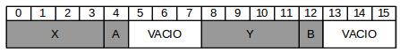
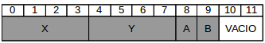

Al igual que los array, permiten agrupar varios datos, pero en este caso podrán ser de distintos tipos, permitiendo manipularlos todos juntos con un mismo identificador o por separado.
Las estructuras reciben también el nombre de registros ó "records" y cada variable se denomima campo o "field".
Donde la estructura <IDENTIFICADOR> ya está creada.
Para sustituir uno de los datos contenidos en la estructura se utiliza
COUT << <VAR_EST>.<VAR_NAME>;
Funciones al interior de las estructuras
En C++ podemos incluir funciones al interior de las estructuras. Dos funciones muy particulares son las de inicialización, o constructor y el destructor.El constructor es una función sin tipo de retorno y con el mismo nombre que la estructura. El destructor tiene la misma forma salvo que el nombre es precedido por el operador "~" ([ALT]+126).
El constructor puede definir su proceso (código de la función) fuera o dentro de la estructura, en cualquiera que sea el caso, la función se sitúa en la parte correspondiente a la declaración de variables de la estructura
Se debe utilizar contructores para inicializar las variables dentro de una estructura, ya que de otra manera al ser cargados por el ejecutable contendrían basura.
Es posible también incluir otras funciones dentro de una estructura. Estas si tendrán un tipo definido.
Inicialización de Estructuras
Podemos inicilizar las variables declaradas en un tipo de estructura reada, esto se hace por medio de listas como a continuación se muestra en el ejemplo. De esta manera todaslas variables que creemos con este tipo contendrán valores iniciales.
Estructura simple
Estructura anidada
STRUCT A {
INT i;
INT h;
INT p;
};
A = {10,20,30};
STRUCT B {
INT x;
STRUCT C {
CHAR c;
CHAR d;
}y;
INT 2;
};
B = {2, {'a','b'}, 20}
Asignación de Estructuras
Si se tiene
STRUCT H{
INT x;
INT y;
PUNTO ( ) {x=O; y=O;}
} PUNTO_1, PUNTO_2;
PUNTO_2.x = PUNTO_1.x
PUNTO_2.y = PUNTO_1.y
Equivale a
PUNTO_2 = PUNTO_1
Arrays de estructuras
Es posible crear arrays para las variables declarando dentro de una estructura (muy útil para variables tipo char), así como en las variables del tipo de la estructura (<var_estructura>).
Estructuras anidadas
Es posible también anidar estructuras, conteniendo cada una en sus respectivas llaves "{ }".
Para declarar una variable del tipo de una estructura ya creada dentro de otra estructura se utiliza:
<STRUCTURE_NAME> <VAR_ESTRUCTURA>;
Las estructuras anidadas pueden ser llamadas dentro y fuera de la estructura principal.
Por lo general, no es usual definir estructuras dentro de estructuras, ya que resultan tener un ámbito local, y para acceder a ellos se necesita hacer referencia a la estructura más externa haciendo uso del operador de acceso (::).
Estructuras anónimas
Son las que carecen de identificador, nombre de la estructura, y de declaración de variables del tipo de estructura.
Como se observa en el ejemplo, la sintaxis se asemeja a la de una estructura anidada, para sin identificador ni variables, así para accceder a cualquiera.
La utilidad de este formato no parece muy relevante en las estructuras, sin embargo en los extremos lo será. El único lugar donde se pueden utilizar estructuras anónimas es en el interior de otras estructuras o uniones.
Operador sizeof
Cuando se aplique el operador sizeof a una estructua, el tamaño obtenido no siempre coincide con el tamaño de la suma de los campos. Esto ocurre debido a la alineación de bytes, esto quiere decir que el computador intentó alinear las variables en las posiciones de memoria más favorables.
Para mejorar el entendimiento del procesador, no se accede a todos las posiciones de memoria, en la mayoría de los casos es mejor si solo se accede a posiciones múltiplos de 4, esto dicta las posiciones más favorables.
De esta manera si al declarar las variables dentro de una estructura no tenemos cuidado en ordenarlas, estaremos dejando espacios de memoria vacíos y con esto, aumentando el tamaño en bytes de nuestra estructura. P.E.
Orden de declaración
INT X;
CHAR A;
INT Y;
CHAR B;
Dimensiones en memoria (bytes)
INT = 4
CHAR = 1
ACOMODO

SIZEOF = 16 bytes
Orden de declaración
INT X;
INT Y;
CHAR A;
CHAR B;
"
ACOMODO

SIZEOF = 12 bytes
Campos de bits
Las estructuras tienen la capacidad de almacenar sus campos (variables) en grupos o bloques de listas correspondientes al tamaño de su tipo de datos. Es decir, si vamos a usar datos tipo "char" es posible dividir los 8 bits (1 byte), que esta variable ocupa en distintos campos para variables del mismo tipo, es decir, podemos tener 8 campos de 1 bit, 4 de 2 bits, 2 de 3 bits y uno de dos a diferentes combinaciones.
Puede que su utilidad sea más clara cuando se usan campos de enteros, ya que podemos dividir los 16 bits (2 bytes) [entre corte] en diferentes campos, cuando sabemos las cantidades máximas que manejaremos, por ejemplo, un campo antes de 5 bits podrá contener un valor máximo igual a 63, es decir, en un rango de 0 a 63.
Debemos usar siempre valores de enteros sin signo, ya que estos se almacenan en un bit del entero, el de mayor peso y puede falsear los datos almacenados.